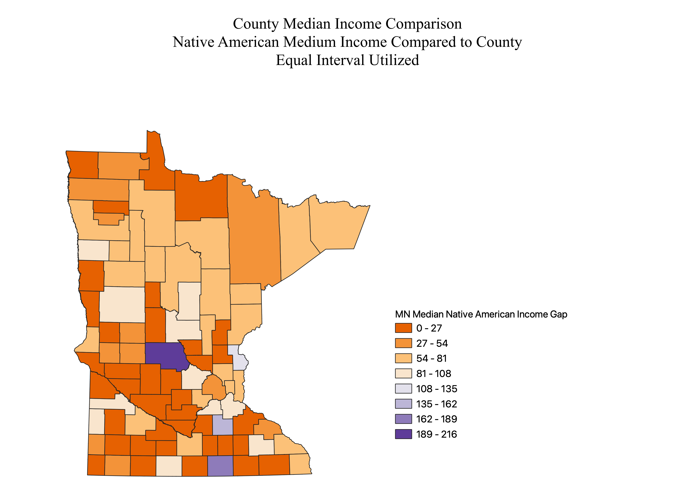

Homework 8: Census Data Comparisons
David Biele
These are choropleths of Median Income Gaps, by Race, per County in Minnesota. The Projection is 26792, which is for central Minnesota. Stretching on counties in the northern portion of the state is visible. Data was obtained from the US Census and is based on the American Community Survey Results. Data displays the percentage difference of the reported median income of the county. Rural counties lacked complete data and have a higher margin of error. Some median income data could not be obtained for some groups.


Data used for this project
CSV dataset
Link to Map 1 geoJSON
Link to Map 2 geoJSON
Link to Map 3 geoJSON